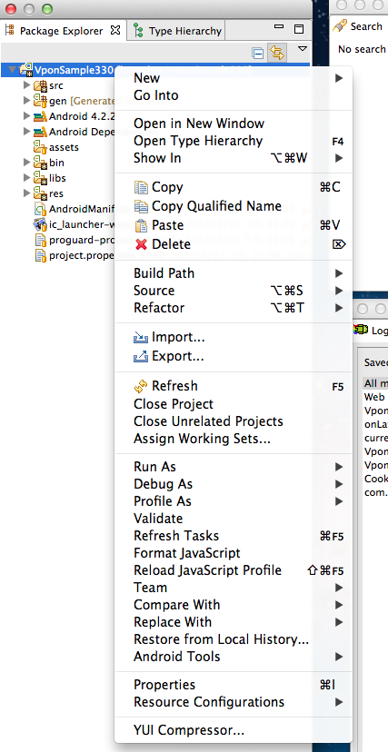

Vpon SDK 基本使用
若您曾使用過舊版SDK，請先閱讀: 升級最新 SDK 所需修改
請先從註冊網址檢查您的 Ad Network 平台:
Taiwan 平台為 http://tw.pub.vpon.com/
China 平台為 http://cn.pub.vpon.com/如果您申請的是 Taiwan 的平台，請使用：
vponBanner = new VpadnBanner(this, bannerId, VpadnAdSize.SMART_BANNER, “TW”);如果您申請的是 China 的平台，請使用：
vponBanner = new VpadnBanner(this, bannerId, VpadnAdSize.SMART_BANNER, “CN”);
系統需求
Vpon 廣告 Android 版的 SDK 需至少搭配 Android 2.1.X 或更新版本使用。請確認您所使用的是最新版的 Android SDK，並依據 Android v4.X 或更新版本進行編譯 (將 default.properties 中的 target 設為 android-17)。
導入 SDK
要在應用程式中加入 Vpon 廣告，您必須完成三個步驟：
- 在 Android Studio/Eclipse 專案中加入 Vpon SDK 4 JAR
- 在 AndroidManifest.xml 中宣告 com.vpadn.widget.VpadnActivity
- 在資訊清單中設定必要的 permissions。
Eclipse
在 Eclipse 中的應用程式專案上按一下滑鼠右鍵，並選擇
Properties。 選取
Java Build Path(Java 建構路徑) 和Libraries(程式庫) 分頁，然後按一下Add External JARs...(新增外部 JAR...)，加入 Vpon 廣告 JAR。
Android Studio
在 Android 中的應用程式專案找到
libs(途徑：project_name->app->libs)
滑鼠右鍵點選
libs後，左鍵點選 [Reveal in Finder]
將下載下來的 JAR 檔複製到
libs資料夾 (也可以直接拖移 Vpon JAR 至專案的libs)
回到 Android 專案，
libs會多出一個 Vpon 的 JAR 檔案，對它按下右鍵選則 [Add as library]。也請到 app 下的 build.gradle 確認，如範例顯示，將會有一行 compile files('libs/vpon_SDK_version_name.jar') 表示 JAR 被讀到了
VpadnActivity
加入以下設定在您的 AndroidManifest.xml
<activity
android:name="com.vpadn.widget.VpadnActivity"
android:configChanges="orientation|keyboardHidden|navigation|keyboard|screenLayout|uiMode|screenSize|smallestScreenSize"
android:theme="@android:style/Theme.Translucent"
android:hardwareAccelerated="true" >
</activity>
注意: 上面每一個屬性都不能少,其值都需要相同！
Permissions
加入以下 permission 在您的 AndroidManifest.xml
<uses-permission android:name="android.permission.INTERNET" />
<uses-permission android:name="android.permission.READ_PHONE_STATE"/>
<uses-permission android:name="android.permission.ACCESS_COARSE_LOCATION"/>
<uses-permission android:name="android.permission.WRITE_EXTERNAL_STORAGE" />
<uses-permission android:name="android.permission.ACCESS_WIFI_STATE" />
<uses-permission android:name="android.permission.ACCESS_NETWORK_STATE"/>
上面六個是必要的 permission，另外建議您可以開啟下面這個 permission，將可以更精準的定位取得地理位置相關的廣告
<uses-permission android:name="android.permission.ACCESS_FINE_LOCATION"/>
另外下面這個 permission 可以提高辨識使用者身分的能力，讓廣告能更精準的被投放，進而為您帶入更多的營收
<uses-permission android:name="android.permission.GET_ACCOUNTS"/>
由於Vpon SDK 4 有大量的 Video 廣告，建議您在你放 Banner 的 Activity 內加入硬體加速，如下
<activity
android:name="com.vpadn.example.MainActivity"
android:label="@string/app_name"
android:configChanges="keyboardHidden|orientation"
android:hardwareAccelerated="true" >
<intent-filter>
<action android:name="android.intent.action.MAIN" />
<category android:name="android.intent.category.LAUNCHER" />
</intent-filter>
</activity>